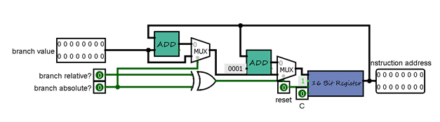
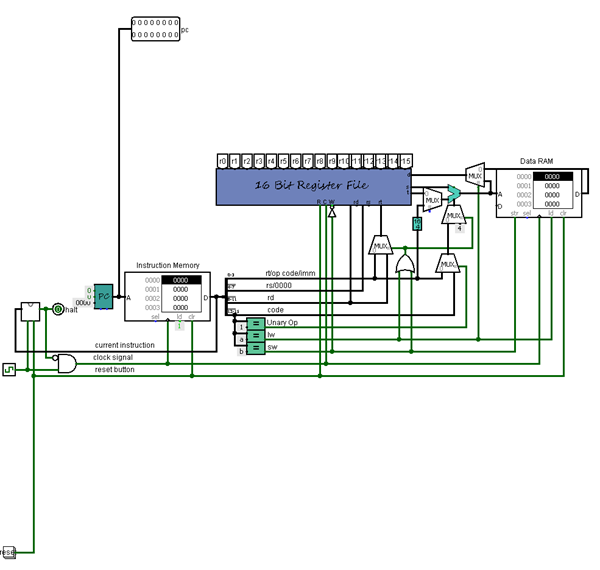

Project 5: Datapath
Program Counter
Een program counter is zoals we weten een register die bij elke instructie de waarde in zijn register optelt met 1. Dit is om aan te tonen waar een computer is met het uitvoeren van een sequentie van programma's. Om dit te maken gebruiken we onze 16-bit register (met klok en reset bit) om de waarde van de program counter in te bewaren. Daarnaast hebben we nog de branch value (korter: b.v.) als input en nog 2 andere inputs om aan te geven of de branch absoluut of relatief is. De program counter voegt de waarde van de branch toe aan de waarde in de register als het relatief is, zo niet dan wordt de b.v. opgeteld met 1 en dan opgeslagen in de register. Die waarde, nu met de naam Instruction Address, wordt dan nog doorgeven.
Simple Datapath
Heel kort gezegd is dit datapad een verzameling van een ALU en opslagplaatsen (register file, program counter en RAM). De eerste RAM is voor de instructies die de computer moet uitvoeren tijdelijk te bewaren. De tweede behoudt de data van het datapad. We splitten de instructie om zo te achterhalen welke operatie er uitgevoerd moet worden. Door de eerste 4 bits te vergelijken met een constante waarde weten we wanneer we te maken hebben met een Unary of Binary operation, een read word of een write word. Met deze inputs kunnen we het datapath aaneenschakelen en operaties uit laten voeren op basis van de 1 bit data lijnen.
Om alles veilig op te slaan en te kunnen lezen maken we gebruik van onze register file van het vorig project. We hebben wel enkele aanpassingen uitgevoerd om de waardes van r0 tot en met r15 makkelijk te kunnen bereiken.